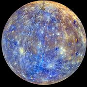
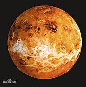
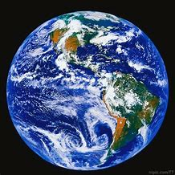
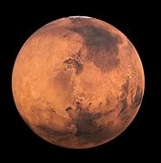
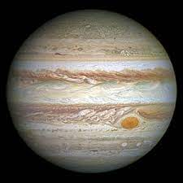
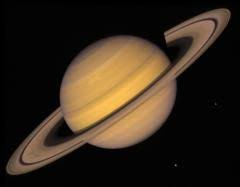
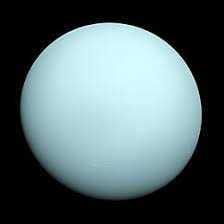
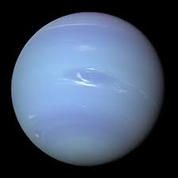

太陽系的八大行星依序為水星, 金星, 地球, 火星, 木星, 土星, 天王星, 海王星.
八大行星的相對大小是怎麼樣呢?
請點選下面的行星圖片即可看到各行星的相關介紹:
水星是太陽系八大行星中最內側最接近太陽的行星，距離太陽約0.39個天文單位，是個佈滿坑洞的小行星。 在冥王星降級成為矮行星之後，成為八大行星中最小的行星。 古代的時候人類就注意到水星的存在，常常在大清早或者是傍晚太陽剛下山時出現在接近地平線的附近。 所以在中國古代水星又稱為晨星(出現在早晨的時候)或者昏星(出現在黃昏過後)。
水星的半徑約為2440公里，在八大行星中是最小的，小到甚麼程度呢? 水星甚至比木星最大的衛星加尼美德以及土星最大的衛星泰坦還要小!! 在照片中可以看到水星清晰的邊緣，表示水星表面沒有濃厚的大氣層。
水星的表面狀況類似月球，有許多凹凹凸凸的隕石坑，但沒有月球上「海」的構造，另外大型的懸崖峭壁也十分常見 ，除了這些構造以外，水星也有其他比較平緩的平原地區，可能是古代的火山區。左圖為水星表面照片與月球表面照片之比較。
水星表面這樣的地形顯示，水星在行成之後便受到許多隕石的撞擊，因此產生這樣坑坑疤疤的外表。水星上最大的隕石坑是「卡洛里斯盆地」，直徑約達1300 公里，為水星直徑的四分之一。根據推算應該是曾經遭受直徑100公里程度的小行星撞擊而產生的遺跡。
|  |  |  |  |
| 水星 | 金星 | 地球 | 火星 |
|  |  |  |  |
| 木星 | 土星 | 天王星 | 海王星 |